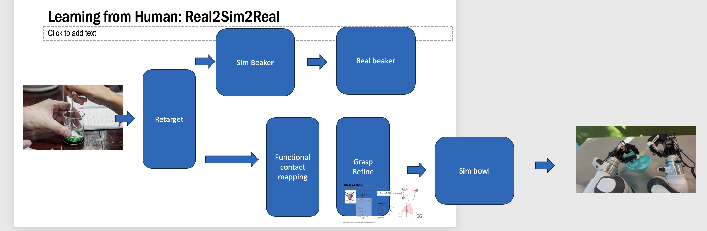
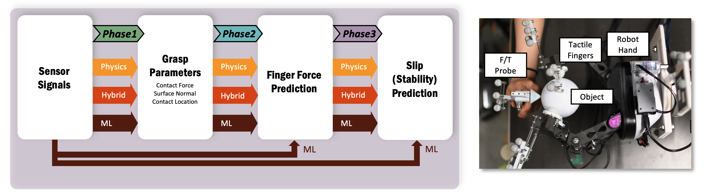
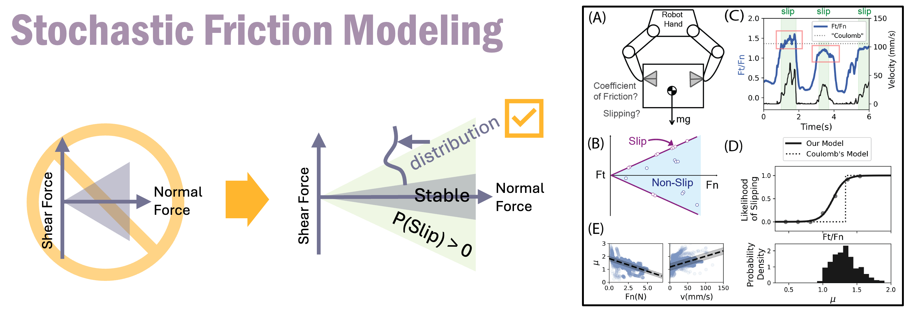
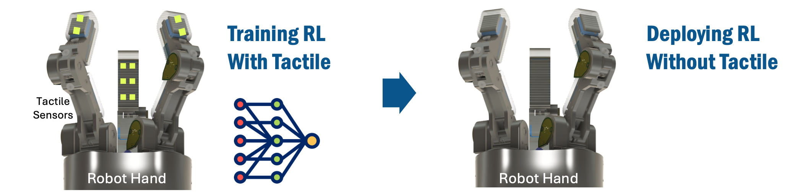
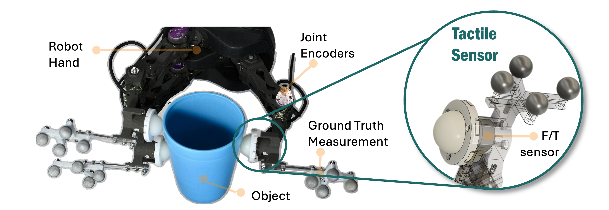
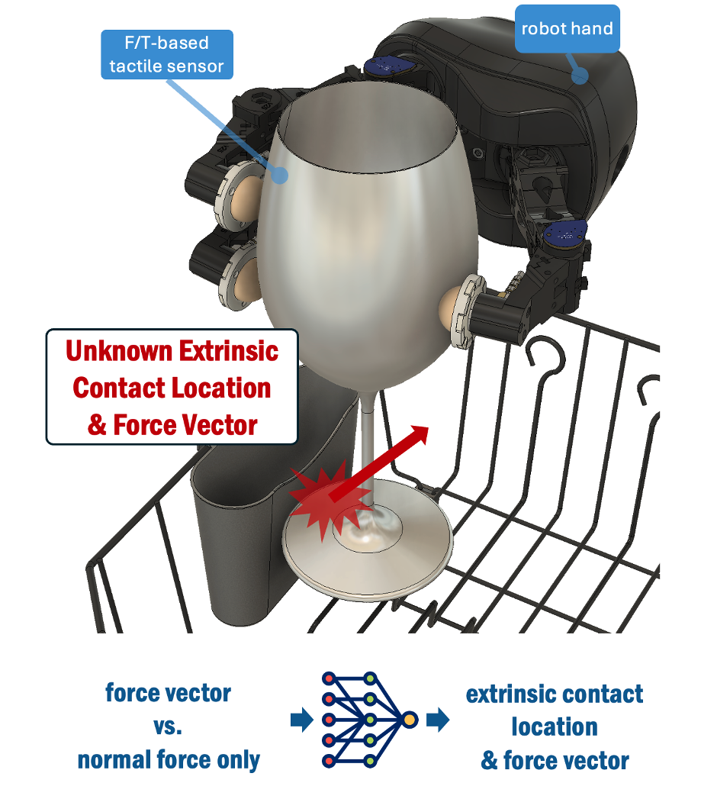

About Me
I'm a robotics researcher focused on manipulation. Most recently, I was a postdoctoral researcher at Meta FAIR under Professor Jitendra Malik. I earned my Ph.D. in Engineering Sciences from Harvard University with Professor Rob Howe, where my thesis was titled "Reliable Grasping with Tactile Sensing". I completed both my bachelor's and M.Eng. degrees in Electrical Engineering and Computer Science at MIT, where my master's thesis was advised by Professor Hugh Herr at the MIT Media Lab.
My work focuses on bridging full-stack robotic manipulation and human-to-robot learning. During my PhD, I designed tactile sensors and a dexterous robotic hand, integrated full systems, and developed friction-theoretical and physics–ML hybrid models for grasping. Building on this, at Meta FAIR, I created a pipeline to transfer skills from human demonstrations to any robotic embodiment, enabling rapid skill transfer and large-scale dataset generation.
Other topics I've worked on include: reinforcement learning, real2sim2real, human2robot transfer learning, robotic simulation, large-scale robot learning, tactile representation learning.
Selected Projects
Human-to-Robot Skill Transfer
Developed scalable pipelines for transferring manipulation skills from human demonstrations to various robotic embodiments, enabling generalizable and efficient robot learning.
- Pan, C., Wang, C., Qi, H., Liu, Z. Bharadhwaj, H. Sharma, A., Wu, T., Shi, G., Malik, J, Hogan, F., 2025. (Title removed for double blind review). In Review for ICRA 2026.
- Liu, Z., Pan, C., Wang, C., Wu, T., Hogan, F., Malik, J. Learning from human videos: stable functional grasp transfer via contact. In Preparation for Submission.
Robot Tactile Representation Learning
- Higuera, C., Sharma, A., Fan, T., Bodduluri, C.K., Boots, B., Kaess, M., Lambeta, M., Wu, T., Liu, Z., Hogan, F.R. and Mukadam, M., 2025. Tactile Beyond Pixels: Multisensory Touch Representations for Robot Manipulation. arXiv preprint arXiv:2506.14754.
- Sharma, A., Higuera, C., Bodduluri, C.K., Liu, Z., Fan, T., Hellebrekers, T., Lambeta, M., Boots, B., Kaess, M., Wu, T. and Hogan, F.R., 2025. Self-supervised perception for tactile skin covered dexterous hands. arXiv preprint arXiv:2505.11420.
Physics-ML Hybrid Models for Grasping
- Evaluating the role of physics-based models in robotic grasping - useful in physics-ML hybrid models especially when data is limited
- Enhancing machine learning by using parameters from physical models.
- Faster training, reduced data requirements, interpretable models, and improved grasp stability for deployment in unstructured environments.
Novel Stochastic Friction Model
- Discovery: The coefficient of friction is a stochastic variable and varies strongly with contact force and velocity.
- Development of an accurate model of slipping as a continuous function.
- Implication: potentially more realistic physics engines for simulation and machine learning.
How to Leverage Tactile Sensing without Tactile Sensors
- Using Reinforcement Learning to evaluate robot hands with various tactile resolutions.
- Discovery: training with sensor-rich rewards allows for reduced sensing.
- Implication: enabling low-cost, high-performance robots and transforming success rate vs. cost trade-offs.
Koenig, A., Liu, Z., Janson, L. and Howe, R., 2022, October. The role of tactile sensing in learning and deploying grasp refinement algorithms. In 2022 IEEE/RSJ International Conference on Intelligent Robots and Systems (IROS) (pp. 7766-7772). IEEE. (Note: mentored first author.)
Sensor & Hardware Developement
- Designed, developed, and characterized tactile sensors with gold-standard instruments.
- Designed & developed underactuated 3-fingered robot hand with tactile sensors.
- Integrated with UR-5 robot arm and independent gold-standard grasp paramter tracking instruments.
Collision Localization & Force Prediction
- Accurate estimation of the contact force and contact location of a disturbance load using machine learning.
- Implication: enabling recovery from grasp error for robots with tactile sensors.
Liu, Z.*, Umbach, T.*, and Howe, R.D., 2025. (Title removed for double blind review). In Review for ICRA 2026.
Contact
Email: zixiliu@alum.mit.edu
GitHub: @zixiliu
LinkedIn: linkedin.com/in/zixi-zeo-liu-169b2591
Google Scholar: https://scholar.google.com/citations?user=4eeVPBoAAAAJ&hl=en&oi=ao